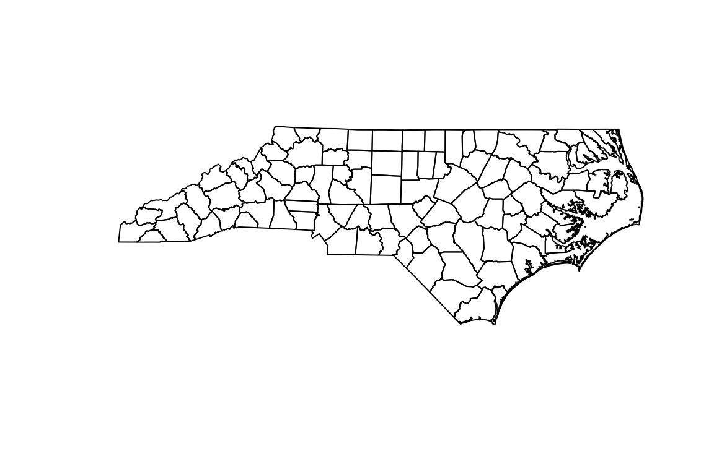
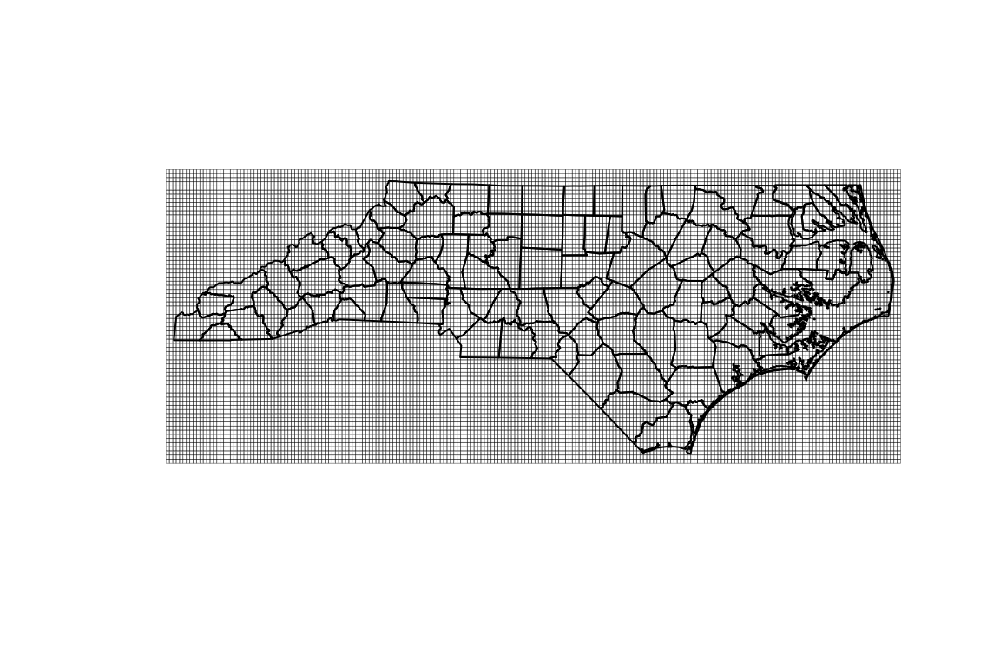
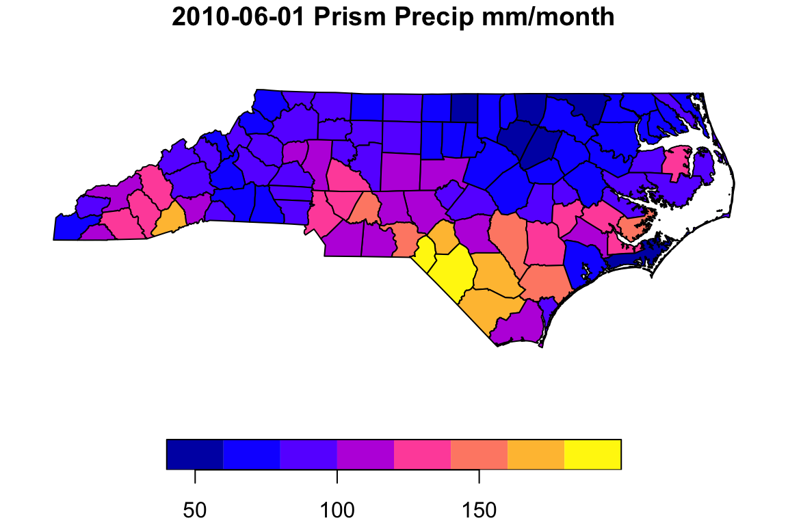
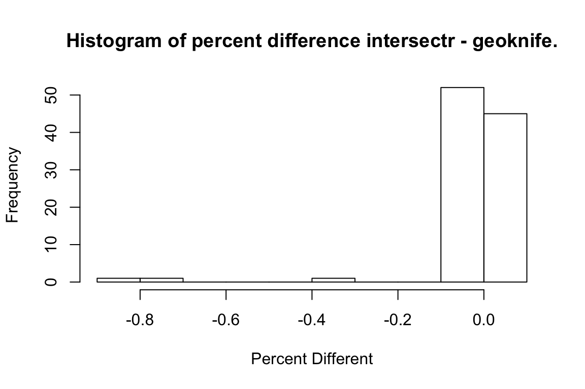
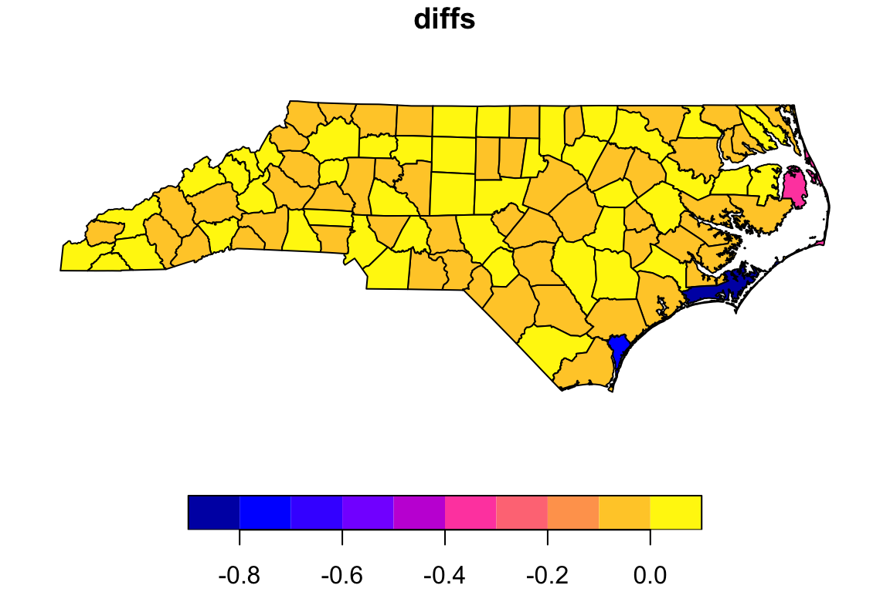

Comparison with geoknife and the Geo Data Portal
dblodgett@usgs.gov
Source:vignettes/prism_demo.rmd
prism_demo.rmdThis is a complete demo showing a workflow implemented with intersectr compared to the same workflow implemented with geoknife. This both demonstrates intersectr and shows that we get the same answers as the well-vetted Geo Data Portal, as used by geoknife.
One of the primary goals of the package is to intersect gridded time series data with polygon geometries. For example, and as shown below, we can get time-series of area-weighed average monthly precipitation for counties in North Carolina from the PRISM source dataset that has a 4km - monthly resolution.
The example here uses a dataset from a THREDDS/OPeNDAP data server. Local NetCDF files can also be used but may require special handling if files are broken up through time.
The ncmeta package provides most of the NetCDF metadata handling and will work for either remote OPeNDAP hosted data or local NetCDF data. Below, we get a list of variables and their coordinate variables that will be used later to construct cell geometry.
library(ncmeta)
library(dplyr)
#>
#> Attaching package: 'dplyr'
#> The following objects are masked from 'package:stats':
#>
#> filter, lag
#> The following objects are masked from 'package:base':
#>
#> intersect, setdiff, setequal, union
library(RNetCDF)
library(sf)
#> Linking to GEOS 3.7.1, GDAL 2.4.0, PROJ 5.2.0
nc_file <- "https://cida.usgs.gov/thredds/dodsC/prism_v2"
(nc_coord_vars <- nc_coord_var(nc_file))
#> # A tibble: 7 x 6
#> variable X Y Z T bounds
#> <chr> <chr> <chr> <chr> <chr> <chr>
#> 1 lon lon <NA> <NA> <NA> <NA>
#> 2 lat <NA> lat <NA> <NA> <NA>
#> 3 time <NA> <NA> <NA> time time_bnds
#> 4 time_bnds <NA> <NA> <NA> time <NA>
#> 5 ppt lon lat <NA> time <NA>
#> 6 tmx lon lat <NA> time <NA>
#> 7 tmn lon lat <NA> time <NA>
variable_name <- "ppt"
nc_coord_vars <- filter(nc_coord_vars, variable == variable_name)We’ll use the same sample polygons provided by the sf package as our geometry. To make sure we get a good comparison with the Geo Data Portal, a more detailed version of the North Carolina county geometry is available as part of intersectr.
geom <- read_sf(system.file("extdata/detailed_counties.gpkg",
package = "intersectr"))
plot(st_geometry(geom))
Now we can create cell geometry for the grid we are going to intersect with our county geometry. A function from ncmeta helps figure out the right proj4 string from our NetCDF file.
While very small, some of the row coordinates spacings are big enough to be interpreted as irregular in the create_cell_geometry function. We can even them out with the regularize = TRUE input.
The create_cell_geometry function generates an sf data.frame representing each cell from the dataset as a polygon with a unique id.
(nc_prj <- nc_gm_to_prj(nc_grid_mapping_atts(nc_file)))
#> Warning in nc_grid_mapping_atts.data.frame(nc_atts(x), data_variable): No variables with a grid mapping found.
#> Defaulting to WGS84 Lon/Lat
#> [1] "+proj=longlat +a=6378137 +f=0.00335281066474748 +pm=0 +no_defs"
nc <- open.nc(nc_file)
X_coords <- var.get.nc(nc, nc_coord_vars$X, unpack = TRUE)
Y_coords <- var.get.nc(nc, nc_coord_vars$Y, unpack = TRUE)
(cell_geometry <-
create_cell_geometry(X_coords = X_coords,
Y_coords = Y_coords,
prj = nc_prj,
geom = geom,
buffer_dist = 0.1, # Degrees
regularize = TRUE))
#> Warning in st_buffer.sfc(st_union(geom), buffer_dist): st_buffer does not
#> correctly buffer longitude/latitude data
#> dist is assumed to be in decimal degrees (arc_degrees).
#> although coordinates are longitude/latitude, st_contains assumes that they are planar
#> Simple feature collection with 15407 features and 3 fields
#> Attribute-geometry relationship: 3 constant, 0 aggregate, 0 identity
#> geometry type: POLYGON
#> dimension: XY
#> bbox: xmin: -84.41667 ymin: 33.75 xmax: -75.375 ymax: 36.70833
#> epsg (SRID): 4326
#> proj4string: +proj=longlat +ellps=WGS84 +no_defs
#> First 10 features:
#> grid_ids X_ind Y_ind geometry
#> 1 1 976 319 POLYGON ((-84.41667 36.7083...
#> 2 2 977 319 POLYGON ((-84.375 36.70833,...
#> 3 3 978 319 POLYGON ((-84.33334 36.7083...
#> 4 4 979 319 POLYGON ((-84.29167 36.7083...
#> 5 5 980 319 POLYGON ((-84.25 36.70833, ...
#> 6 6 981 319 POLYGON ((-84.20834 36.7083...
#> 7 7 982 319 POLYGON ((-84.16667 36.7083...
#> 8 8 983 319 POLYGON ((-84.125 36.70833,...
#> 9 9 984 319 POLYGON ((-84.08334 36.7083...
#> 10 10 985 319 POLYGON ((-84.04167 36.7083...
plot(st_geometry(st_transform(cell_geometry,
st_crs(geom))), lwd = 0.2)
plot(st_geometry(geom), add = TRUE)
The area weights function provides weights for area-weighted statistics. The weight column of the output can be used in an area-weighted-mean calculation where mean of the data source cells is desired for each of the county polygons.
data_source_cells <- st_sf(select(cell_geometry, grid_ids))
target_polygons <- st_sf(select(geom, FIPS))
st_agr(data_source_cells) <- "constant"
st_agr(target_polygons) <- "constant"
area_weights <- calculate_area_intersection_weights(
data_source_cells,
target_polygons, allow_lonlat = TRUE)
#> although coordinates are longitude/latitude, st_intersection assumes that they are planarNow we have everything we need to actually run the intersection. The execute_intersection function iterates through time steps, applying the intersection weights for each time step.
start_date <- "2010-01-01 00:00:00"
end_date <- "2011-01-01 00:00:00"
intersected <- execute_intersection(nc_file = nc_file,
variable_name = variable_name,
intersection_weights = area_weights,
cell_geometry = cell_geometry,
x_var = nc_coord_vars$X,
y_var = nc_coord_vars$Y,
t_var = nc_coord_vars$T,
start_datetime = start_date,
end_datetime = end_date)
# Save for later comparison.
intersected_intersectr <- intersectedNow we can plot up some of the resulting data on a map or through time.
date <- "2010-06-01"
row <- which(as.character(intersected_intersectr$time_stamp) == date)
ncols <- ncol(intersected_intersectr)
fips <- names(intersected)[2:ncols]
ts_data <- intersected_intersectr[, 2:ncols]
poly_data <- as.numeric(intersected_intersectr[row, 2:ncols])
ts_range <- seq(min(ts_data), max(ts_data), length.out = nrow(ts_data))
time_stamps <- intersected_intersectr$time_stamps
geom_data <- geom %>%
select(FIPS) %>%
left_join(data.frame(FIPS = fips, poly_data = poly_data,
stringsAsFactors = FALSE), by = "FIPS")
plot(geom_data["poly_data"], main = paste(date, "Prism Precip mm/month"))
plot(time_stamps, ts_range, col = NA,
xlab = "Year", ylab = "PRISM Indicated Precip (mm/month)")
lines(time_stamps, apply(ts_data, 1, mean), lwd = 2, col = "grey")
lines(time_stamps, apply(ts_data, 1, max), lwd = .5, col = "grey")
lines(time_stamps, apply(ts_data, 1, min), lwd = .5, col = "grey")Now lets run the same thing with geoknife and plot up the same thing.
library(geoknife)
fabric <- webdata('prism')
times(fabric) <- c(start_date, end_date)
variables(fabric) <- "ppt"
stencil <- webgeom(geom = "sample:Counties", attribute = "FIPS")
values(stencil) <- target_polygons$FIPS
job <- geoknife(stencil, fabric, wait = TRUE)
intersected <- result(job)
intersected <- intersected[, 1:(ncol(intersected) - 2)]
names(intersected)[1] <- "time_stamps"
order <- match(names(intersected_intersectr), names(intersected))
intersected_geoknife <- intersected[, order]row <- which(as.character(intersected_geoknife$time_stamp) == date)
ncols <- ncol(intersected_geoknife)
fips <- names(intersected_geoknife)[2:ncols]
ts_data <- intersected_geoknife[, 2:ncols]
poly_data <- as.numeric(intersected_geoknife[row, 2:ncols])
ts_range <- seq(min(ts_data), max(ts_data), length.out = nrow(ts_data))
time_stamps <- intersected_geoknife$time_stamps
geom_data <- geom %>%
select(FIPS) %>%
left_join(data.frame(FIPS = fips, poly_data = poly_data,
stringsAsFactors = FALSE), by = "FIPS")
plot(geom_data["poly_data"], main = paste(date, "Prism Precip mm/month"))
plot(time_stamps, ts_range, col = NA,
xlab = "Year", ylab = "PRISM Indicated Precip (mm/month)")
lines(time_stamps, apply(ts_data, 1, mean), lwd = 2, col = "grey")
lines(time_stamps, apply(ts_data, 1, max), lwd = .5, col = "grey")
lines(time_stamps, apply(ts_data, 1, min), lwd = .5, col = "grey")To get an idea of what this looks like on a map, now we can plot up the grid data and polygon data together.
X_inds <- seq(min(cell_geometry$X_ind), max(cell_geometry$X_ind), 1)
Y_inds <- seq(min(cell_geometry$Y_ind), max(cell_geometry$Y_ind), 1)
ids <- intersectr:::get_ids(length(X_inds), length(Y_inds))
dates <- utcal.nc(att.get.nc(nc, "time", "units"),
var.get.nc(nc, "time", unpack = TRUE),
type = "c")
date_ind <- which(as.character(dates) == date)
grid_data <- var.get.nc(nc, variable_name,
start = c(min(X_inds), min(Y_inds), date_ind),
count = c(length(X_inds), length(Y_inds), 1),
unpack = TRUE)
grid_data <- data.frame(grid_data = matrix(grid_data,
ncol = 1,
byrow = TRUE),
grid_ids = matrix(ids, ncol = 1))
grid_data$grid_data[grid_data$grid_data < 0] <- NA
grid_data <- left_join(cell_geometry, grid_data, by = "grid_ids")
intersected <- intersected_intersectr
row <- which(as.character(intersected$time_stamp) == "2010-06-01")
geom_data <- select(geom, FIPS) %>%
left_join(data.frame(FIPS = names(intersected)[2:ncol(intersected)],
poly_data = as.numeric(intersected[row, 2:ncol(intersected)]),
stringsAsFactors = FALSE),
by = "FIPS")
geom_data <- st_transform(geom_data, st_crs(grid_data))
breaks <- c(0, 80, 120, 200, 300, 400)
plot(grid_data["grid_data"], border = NA, breaks = breaks)plot(grid_data$geometry)
plot(grid_data["grid_data"], border = NA, breaks = breaks, add = TRUE)
plot(geom_data["poly_data"], breaks = breaks, add = TRUE)Now lets look at how these two results compare. As the historgram and map shows below, all differences are below 1%!
row_ir <- which(as.character(intersected_intersectr$time_stamp) == "2010-06-01")
row_gk <- which(as.character(intersected_geoknife$time_stamp) == "2010-06-01")
data_ir <- intersected_intersectr[row_ir, 2:ncol(intersected_intersectr)]
data_gk <- intersected_geoknife[row_gk, 2:ncol(intersected_geoknife)]
all(names(data_ir) == names(data_gk))
#> [1] TRUE
compare <- data.frame(fips = names(data_ir),
ir = as.numeric(data_ir),
gk = as.numeric(data_gk), stringsAsFactors = FALSE)
compare["diffs"] <- 100 * (as.numeric((data_ir - data_gk) / ((data_ir + data_gk) / 2)))
hist(compare$diffs,
main = "Histogram of percent difference intersectr - geoknife.",
xlab = "Percent Different")
max_diff <- which(abs(compare$diffs) == max(abs(compare$diffs)))
data_ir[max_diff]
#> 37031
#> 6 46.8739
data_gk[max_diff]
#> 37031
#> 6 47.29036
geom_data <- left_join(select(geom_data, FIPS, poly_data),
select(compare, fips, diffs), by = c("FIPS" = "fips"))
plot(geom_data["diffs"])